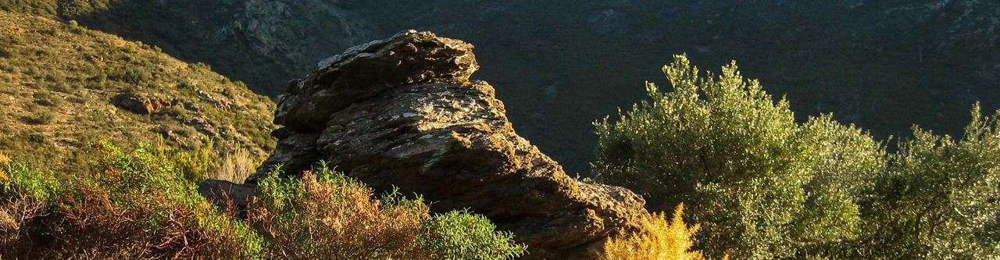

Ruta · Roses
Sortint des de la Urbanització del Mas Oliva ens endinsarem a la vall de l'Alzeda, ens enfilarem fins al Pic de l'Àliga (463 metres). A Migjorn ens enlluernarem amb el mar platejat de la gran…